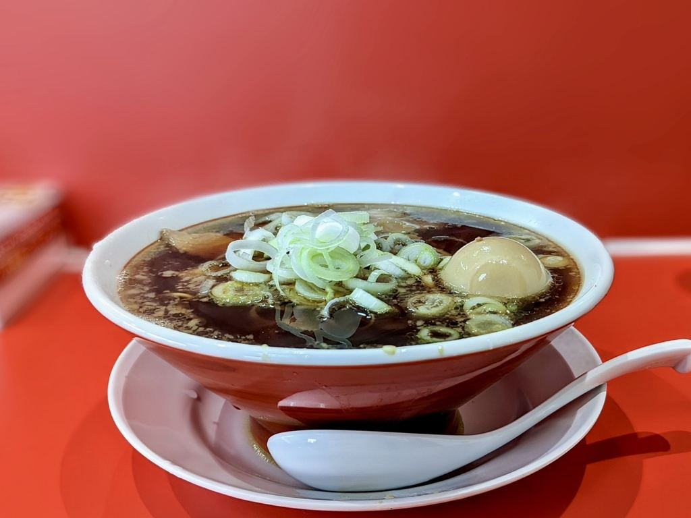
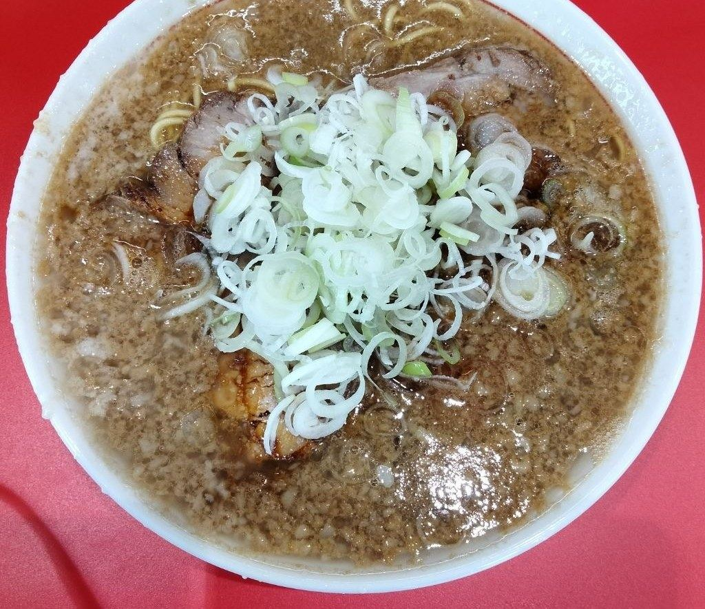
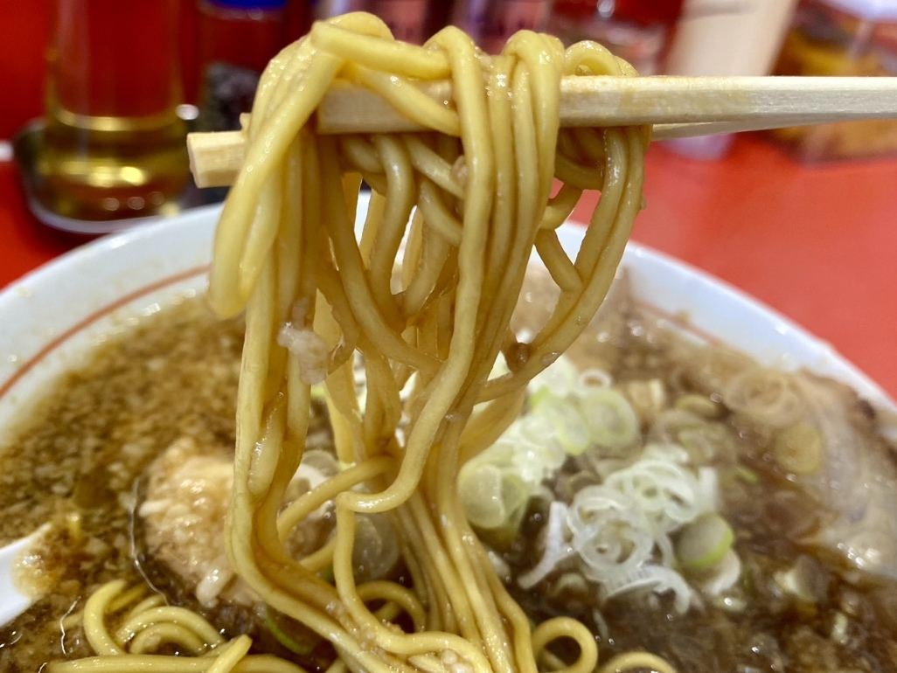

朝七時。
ラーメン長瀬 京都系 背脂中華そば｜茨城県古河市中田
黒い醤油だれのスープに背脂を溶かし、細麺に白ねぎをのせた一杯です。 朝七時から暖簾を出しております。

当店は、月曜日を除く毎日、朝七時に暖簾を出しております。 出勤前や散歩の帰りにも、湯気の立つ一杯を召し上がっていただけます。 火・金・土曜日は、夜の部（18:00〜21:00）もお出ししております。
月曜日は定休日です。
湯気の立つ一杯を、朝一番からお楽しみいただけます。
京都系と呼ばれる、黒い醤油だれをベースにしたスープです。 背脂を溶かし込み、細麺に白ねぎを添えてお出ししております。


「茨城県古河市にある朝から京都ラーメンが食べれるお店。」
お客様の声より
「京都系背脂中華そばのお店です。スッキリとして口当たりの良いブラックスープと味わい深い細麺を堪能出来ます」
お客様の声より
「白メシがススむラーメン。絶品の『背脂中華そば』」
お客様の声より
| 住所 | 〒306-0053 茨城県古河市中田1003-1（県道56号沿い） |
|---|---|
| 営業時間 | 火・金・土 07:00〜14:30（L.O.14:00）／18:00〜21:00（L.O.20:30） 水・木・日 07:00〜14:30（L.O.14:00） |
| 定休日 | 月曜日 |
| 駐車場 | 有 |
| お支払い | 現金のみ |